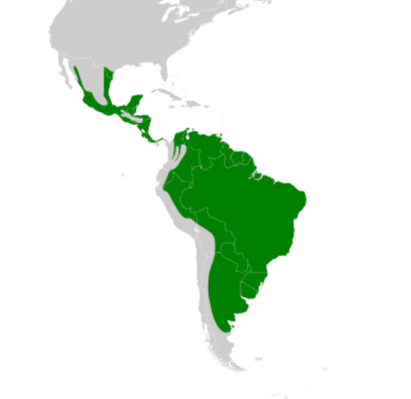

Sobre
O bem-te-vi é uma ave passeriforme da família dos Tiranídeos. Conhecido também como bem-te-vi-de-coroa, bem-te-vi-verdadeiro e em alguns lugares do NE como cirino, é provavelmente o pássaro mais popular de nosso país, podendo ser encontrado em cidades, matas, árvores à beira d'água, plantações e pastagens. Em regiões densamente florestadas habita margens e praias de rios. É também muito popular nos outros países onde ocorre, recebendo nomes onomatopeicos em várias línguas como kiskadee em inglês, qu´est ce em francês (Guiana) e bichofêo em espanhol (Argentina).
Nome Científico
Seu nome científico significa: do (tupi) Pitanguá guaçú = nome ameríndio tupi para várias espécies de papa-moscas; e do (latim) sulphuratus, sulfur = amarelo sulfúreo, sulfúreo, enxofre. ⇒ Pitanguá amarelo sulfúreo.
Características
Ave de médio porte, o bem-te-vi mede entre 20,5 e 25 centímetros de comprimento e pesa aproximadamente de 52-68 g. Tem o dorso pardo e a barriga de um amarelo vivo; uma listra (sobrancelha) branca no alto da cabeça, acima dos olhos; cauda preta. O bico é preto, achatado, longo, resistente e um pouco encurvado. A garganta (zona logo abaixo do bico) é de cor branca. Possui um topete amarelo somente visível quando a ave o eriça em determinadas situações. O seu canto trissilábico característico lembra as sílabas bem-te-vi, que dão o nome à espécie. Portanto, seu nome popular possui origem onomatopeica. Existem várias espécies de tiranídeos com o mesmo padrão de cores, dentre as quais 4 são particularmente similares ao bem-te-vi: o neinei (Megarynchus pitangua), o bentevizinho-do-brejo (Philohydor lictor), e os dois bentevizinhos do gênero Myiozetetes, o bentevizinho-de-penacho-vermelho (Myiozetetes similis) e o bentevizinho-de-asa-ferruginea (Myiozetetes cayanensis). O neinei é do mesmo tamanho do bem-te-vi, mas possui um bico maior e bem mais largo, o bentevizinho-do-brejo é mais esbelto, menor e apresenta o bico proporcionalmente mais afinado achatado. Já os bentevizinhos do gênero Myiozetetes são menores, possuem o bico cônico e proporcionalmente menor e as sobrancelhas brancas menos definidas.
Distribuição
É ave típica da América Latina, com uma distribuição geográfica que se estende predominantemente do sul do México à Argentina, em uma área estimada em 16.000.000 km². Entretanto, pode também ser encontrado no sul do Texas e na ilha de Trinidad. Foi introduzido nas Bermudas em 1957, importado de Trinidad, e na década de 1970 em Tobago. Nas Bermudas, é a terceira espécie de ave mais comum, podendo atingir densidades populacionais de 8 a 10 pares por hectare.
Grau de ameaça: LC – IUCN.
Subespécies
Possui dez subespécies reconhecidas:
- Pitangus sulphuratus sulphuratus (Linnaeus, 1766) - ocorre da região tropical do sudoeste da Colômbia até o sudeste do Peru, as Guianas e no norte do Brasil;
- Pitangus sulphuratus texanus (Van Rossem, 1940) - ocorre nos Estados Unidos da América, do Sul do estado do Texas, no vale do Rio Grande até o sudoeste do México no estado de Veracruz;
- Pitangus sulphuratus derbianus (Kaup, 1852) - ocorre na região árida do Oeste do México, no sul do estado de Sonora até o istmo de Tehuántepec;
- Pitangus sulphuratus guatimalensis (Lafresnaye, 1852) - ocorre no sudeste do México, na região de Nuevo León até o centro do Panamá;
- Pitangus sulphuratus trinitatis (Hellmayr, 1906) - ocorre do extremo leste da Colômbia até o leste da Venezuela e noroeste do Brasil; ocorre também na Ilha de Trinidad;
- Pitangus sulphuratus caucensis (Chapman, 1914) - ocorre no oeste e Sul da Colômbia, no sudoeste da região de Bolívar, Cauca e no vale de Magdalena;
- Pitangus sulphuratus rufipennis (Lafresnaye, 1851) - ocorre na costa norte da Colômbia e no norte da Venezuela;
- Pitangus sulphuratus maximiliani (Cabanis & Heine, 1859) - ocorre da Amazônia brasileira, nordeste, centro oeste e sudeste do Brasil até o leste da Bolívia e no Chaco do Paraguai;
- Pitangus sulphuratus bolivianus (Lafresnaye, 1852) - ocorre no planalto do leste da Bolívia, da região de Cochabamba até Tarija;
- Pitangus sulphuratus argentinus (Todd, 1952) - ocorre no extremo sudeste do Brasil até o leste do Paraguai, no Uruguai e na região central da Argentina.
(Clements checklist, 2014).
Alimentação
Possui uma variada alimentação. É insetívoro, podendo devorar centenas de insetos diariamente. Mas também come frutas (como bananas, mamões, maçãs, laranjas, pitangas e muitas outras), ovos e até mesmo filhotes de outros pássaros, flores de jardins, minhocas, pequenas cobras, lagartos, crustáceos, além de peixes e girinos de rios e lagos de pouca profundidade e inclusive pequenos roedores. Costuma comer parasitas (carrapatos) de bovinos e equinos. Apesar de ser mais comum vê-lo capturar insetos pousados em ramos, também é comum atacá-los durante o voo. Pode capturar aves muito jovens de espécies pequenas que estejam fora do ninho (ninhegos), tendo sido observada a captura de um jovem bico-de-lacre (Estrilda astrild) que era alimentado no chão pelos pais e que provavelmente havia caído do ninho. (Observação:Wagner Rocha) Aprecia os frutos da fruta-de-sabiá ou marianeira (Acnistus arborescens), chala-chala (Allophyllus edulis), araticum ou marolo (Annona coriacea), maria-preta (Solanum americanum), magnólia-amarela (Michelia champaca) e do tapiá ou tanheiro (Alchornea glandulosa). Costuma frequentar comedouros com frutas. É uma ave que está sempre descobrindo novas formas de alimento. Devido ao seu regime alimentar generalista, por vezes contribui para o controle de pragas de insetos, inclusive cupins urbanos. É cada vez mais comum observar em áreas antropizadas, principalmente nas grandes metrópoles, indivíduos se alimentando de ração industrializada de animais domésticos, como a de cachorros e de gatos. (Observação:Antonio Vicente)
Reprodução
Faz ninho grande e esférico, com capim e pequenas ramas de vegetais em galhos de árvores geralmente bem cerradas, com entrada lateral; porém, já foram encontrados ninhos em formato de xícara aberta. Pode utilizar para construir o seu ninho, sobretudo em zonas urbanas, material de origem humana, como papel, plástico e fios. Põe de 2 a 4 ovos de cor creme com poucas marcas marrom-avermelhadas. Existem muitos registros de nidificação em cavidades em árvores, rochas e estruturas artificiais, em vários países; é, portanto, ave que nidifica em cavidades.
Hábitos
É agressivo, ameaça até gaviões e urubus quando esses se aproximam de seu “território”. Costuma pousar em lugares salientes como postes e topos de árvores. Pode-se vê-lo facilmente cantando em fios de telefone, em telhados ou banhando-se nos tanques ou chafarizes das praças públicas, demonstrando grande capacidade de adaptação. É um dos primeiros a cantar ao amanhecer. Anda geralmente sozinho, mas pode ser visto em grupos de três ou quatro que se reúnem habitualmente em antenas de televisão. Podem ser encontrados em áreas urbanas, matas densas e ambientes aquáticos como lagoas, rios e praias.